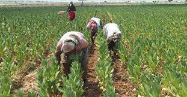
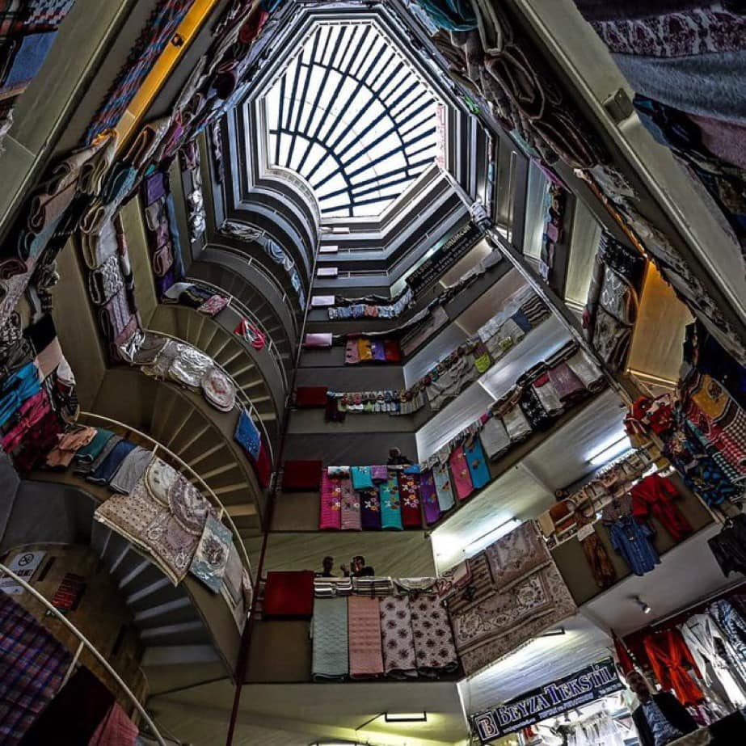

Ekonomi
Türkiye Cumhuriyeti'nin kuruldugu 20' li yıllarda 12 bin nüfuslu küçük bir kasaba olan Denizli bugün 850 bin nüfusuyla Ege Bölgesinde İzmir' den sonra ikinci büyük sanayi ve turizm merkezidir.
Verimli topraklar üzerinde kurulu olan ve tarihi Anadolu'daki en eski uygarlıklara değin uzanan Denizli bugün, Türkiye' nin nüfusu bakımından 20., ekonomik aktivitesi bakımından 13., sanayinin gelişmişliği bakımından 9. ilidir.
Denizli il arazisinin %31,8' i tarım arazisi, %4,9' u çayır ve meralar, %44' ü orman ve fundalık arazisidir. Kalan %19,3' lük bölümü tarım dışı ve yerleşim alanı olarak kullanılmaktadır. En çok yetiştirilen ürünlerin başında pamuk, tütün, bugday ve üzüm yer almaktadır.
Denizli, Türk ekonomisinin dışa açılan en önemli kapılarından biridir. Tekstil, turizm ve mermer başta olmak üzere, tüm ekonomik faaliyetlerde dünya ile rekabet edebilir hale gelen Denizli, özellikle dışa açık ve ihracata dayalı sanayileşmesi ile tekstil dışı sektörlerde de ön sıralara gelmiştir. Yem, ambalaj malzemeleri, emaye bakır tel, elektrolitik bakır mamulleri, gıda, tekstil sektörlerinde Denizli şirketleri ülkenin en büyük şirketleri arasında faaliyet göstermektedir.
Havlu ve bornoz üretiminde önemli bir merkez olan Denizli, bu alanda ülkenin yıllık ihracatının yaklaşık üçte birini karşılamakta olup, pamuklu tekstil alanında dünya başkenti olarak kabul görmektedir.
Enerji Merkezi olma yolunda hızla ilerleyen Denizli yenilenebilir enerji potansiyeli açısından zengin bir ildir. Bunlardan biri olan jeotermal kaynaklar ve potansiyeli bakımından Dünyada 7. Avrupa’da 1. sırada olan Türkiye’de Ege Bölgesi illeri içerisinde de 7 adet jeotermal saha bulunduran Denizli yaklaşık %16 paya sahiptir.